|
|
version 1.0.0
Parametric Hurricane Modeling System
|

|
|
|
version 1.0.0
Parametric Hurricane Modeling System
|
|
In this section the developed modeling system and its associated modeling components are evaluated under realistic atmospheric and ocean conditions, varied flow domains and coupling configurations so the performance of \(\logo{PaHM}\) can be analyzed. Although the individual modeling components of \(\logo{PaHM}\) have been evaluated, the overall model performance still needs evaluation and verification. Switching on and off the different modeling components shows the relative performance of each modeling component with respect to each other and to the problem being investigated. \(\logo{PaHM}\)'s outputs are: \(\itchar{a}\) 10-m wind speed, \(\itchar{b}\) wind direction and \(\itchar{c}\) atmospheric pressure reduced to mean sea level \(\plogo{MSLP}\).
Only parametric statistical tests are used in the performance evaluation of the developed model that include (a) the mean \(\plogo{m}\) of the differences between the calculated and the measured or observed data sets, (b) the standard deviation \(\plogo{SD}\), (c) the root mean square differense \(\plogo{RMSE}\), (d) the coefficient of determination \((R^2)\), (e) the bias \(\plogo{bias}\), (f) the scatter coefficient \(\plogo{SI}\), (g) the Willmott (2012) skill \(\plogo{WS12}\) and (h) the Nash and Sutcliff (1970) skill \(\plogo{NS}\).
a) Mean: The mean of the differences between the modeled and measured data provides a gross overall measure of the model performance and is calculated as:
\begin{equation} m=\frac{\sum\limits_{i = 1}^{n}\big(M_{i}-O_{i}\big)}{n} \label{eqn_mean} \end{equation}
where \(n\) is the total number of observation or modeled points, \(M_{i}\) are the modeled and \(O_{i}\) are the observed values of each evaluated variable. The smaller the mean difference the better the agreement between the model and the observed values, with a value of zero denoting absolute agreement.
b) Standard Deviation: The standard deviation \(\plogo{SD}\) is a measure of the distance of the difference between the calculated and observed data from the mean difference. Small standard deviations indicate that the differences are closer to the mean. The standard deviation is calculated as:
\begin{equation} SD=\sqrt{\frac{\sum\limits_{i = 1}^{n}\big[\big(M_{i}-O_{i}\big)-m\big]^{2}}{{n}}} \label{eqn_std} \end{equation}
c) Root Mean Square Differense: The root mean square difference \(\plogo{RMSE}\) is another test of the overall model performance that measures how close the modeled value of a variable is to the observed value. Mathematically, the test is defined as:
\begin{equation} RMSE=\sqrt{\frac{\sum\limits_{i = 1}^{n}\big(M_{i}-O_{i}\big)^{2}}{{n}}} \label{eqn_rmse} \end{equation}
The differences between the modeled and observed data are squared so that more weight is given to larger errors.
d) Coefficient of Determination: The coefficient of determination \(R^2\), where \(R\) is the correlation coefficient, indicates the proportion of the variance in the dependent variable that is predicted by linear regression and the independent variable. In general, a high \(R^2\) value indicates that the model is a good fit for the data. An \(R^2 = 0.62\), indicates that \(62 \%\) of the variation in the outcome has been explained. A value of 1 would indicate that the regression line represents all of the data (the best fit) while, a value of 0 shows no association at all. Note that the coefficient of determination shows only the magnitude of the association, not whether that association is statistically significant.
\begin{equation} R=\frac{\sum\limits_{i = 1}^{n}\big(O_{i}-\overline{O}\big)\big(M_{i}-\overline{M}\big)} {\sqrt{\sum\limits_{i = 1}^{n}\big(O_{i}-\overline{O}\big)^2\big(M_{i}-\overline{M}\big)^2}} \label{eqn_corr} \end{equation}
where: \(\overline{M} = (1/n) \sum\limits_{i = 1}^{n}M_{i}\) is the mean of the modeled values and \(\overline{O} = (1/n) \sum\limits_{i = 1}^{n}O_{i}\) is the mean of the observation values.
e) Model Bias: Bias is the tendency of a statistical estimator to overestimate or underestimate a parameter. The bias of a statistical estimator is the difference between the expected value of the statistic and the true value of the sample (population) parameter. If the bias is close to zero then the statistical estimator is an unbiased estimator, otherwise it is considered a biased estimator. The statistical estimator used here is the sample or population mean.
\begin{equation} bias=\overline{O}-\overline{M} \label{eqn_bias} \end{equation}
f) Scatter Index: The scatter index \(\plogo{SI}\) is calculated by dividing the \(\logo{RMSE}\) with the mean of the observations and multiplying it by 100 (percent):
\begin{equation} SI=\frac{RMSE}{\overline{O}} \label{eqn_si} \end{equation}
where \(\logo{SI}\) is the percentage of \(\logo{RMSE}\) with respect to the mean of the observations that is, the percentage of expected error for the parameter.
g) Willmott Skill Index: The evaluation of model performance, that is the comparison model estimates with observed values, is a fundamental step for model development and use. This validation process includes criteria that rely on mathematical measurements of how well model results simulate the observed values. The parameter \(\plogo{WS12}\), called index of agreement, is a relative average error and bounded measure. The best agreement between model results and observations will yield a skill of one while, a value of \( \leq 0\) denotes a complete disagreement. This statistic is calculated using the following equations:
\begin{equation}\left. \begin{aligned} &\qquad SM1 = \sum\limits_{i = 1}^{n}\left\lvert O_{i}-M_{i} \right\lvert \;\text{;} && SM2 = \sum\limits_{i = 1}^{n}\left\lvert M_{i}-\overline{O} \right\lvert \left\lvert O_{i}-\overline{O} \right\lvert \\ WS12 &= 1.0 - SM1 / (2.0 \cdot SM2) &&\text{for}\quad SM1\leq 2.0 \cdot SM2 \\ WS12 &= 2.0 \cdot SM2 / SM1 - 1.0 &&\text{for}\quad SM1 > 2.0 \cdot SM2 \end{aligned}\quad\right\} \label{eqn_ws12} \end{equation}
The range of qualification for the Willmott's skill index is given in the following table:
\begin{equation}\left. \begin{aligned} 0.8 < &WS12 \leq 1.0& \text{Excellent} \\ 0.6 < &WS12 \leq 0.8& \text{Good} \\ 0.3 < &WS12 \leq 0.6& \text{Reasonable} \\ 0.0 < &WS12 \leq 0.3& \text{Poor} \\ &WS12 \leq 0.0& \text{Bad} \end{aligned}\quad\right\} \label{eqn_skill_quality} \end{equation}
h) Nash and Sutcliff Skill Index: The Nash and Sutcliff skill index is similar to the Willmott's skill index and it is calculated as:
\begin{equation}\label{eqn_ns} NS=1.0 - \frac{\sum\limits_{i = 1}^{n}\big(M_{i}-O_{i}\big)^2} {\sum\limits_{i = 1}^{n}\big(O_{i}-\overline{M}\big)^2} \end{equation}
For a perfect model with an estimation error variance equal to zero, the Nash and Sutcliffe index equals 1. Values of the Nash and Sutcliffe index close to 1, suggest a model with more predictive skill. The range of qualification presented in the case of the Willmott's skill index can be used for the Nash and Sutcliff skill index case as well.
All the above tests give information on the size, but not of the nature of the error, which make them adequate measures for a preliminary model evaluation. However, a deeper analysis might require specific tests that can reveal the nature of the errors and help with future model improvements.
PaHM was thoroughly evaluated through standalone and coupled model configurations for Hurricane Florence (2018) on the Eastern Coast of the United States. In the coupled configuration, PaHM was used within the CoastalApp modeling framework to supply its forcing wind fields to the ocean model ADCIRC and the wave model WaveWatch III. The standard statistical measures described in section [Statistical Performance Measures] were used to (a) validate the performance of the standalone and coupled system and (b) to identify spatial and temporal system limitations.
The simulation period for hurricane Florence was from 2018-09-07 00 UTC to 2018-09-19 00 UTC (based on the best track file for Florence from the NHC). Simulations were performed using the high resolution Surge and Tide Operational Forecast System (STOFS) mesh (Figure [14]) with a fine resolution of about \(120\, m\) near the coastal areas. The wind fields were exchanged with the ocean and the wave model via PaHM's NUOPC Cap. For evaluation purposes, three series of simulations were performed, namely (a) ADCIRC tide only simulations to verify that the model performs as expected, (b) 1-way coupled PaHM + ADCIRC simulations using wind reduction factors of 0.65, 0.70, 0.75, 0.80, 0.85, 0.90 and 0.95 to determine the optimal wind reduction factor for the particular storm and the particular geographical region and (c) 1-way coupled PaHM + ADCIRC simulation using the results from (a) and (b).
 |  |
Figure 14: STOFS computational Domain. The left panel shows the triangular mesh with coarse resolution of about \(3\, km\) and a fine resolution near all coastal areas of about \(120\, m\). The right panel shows the topo-bathymetry used in the simulations.
The STOFS triangular mesh contains 9,997,402 elements and 5,131,901 nodes with 35 boundary segments defined. The topo-bathymetry data are composed from a variety of data sources and they are referenced to the MSL vertical datum. The resulting ADCIRC mesh/topo-bathymetry file size is about \(800\, MB\). The boundary conditions for all the simulations are tidal.
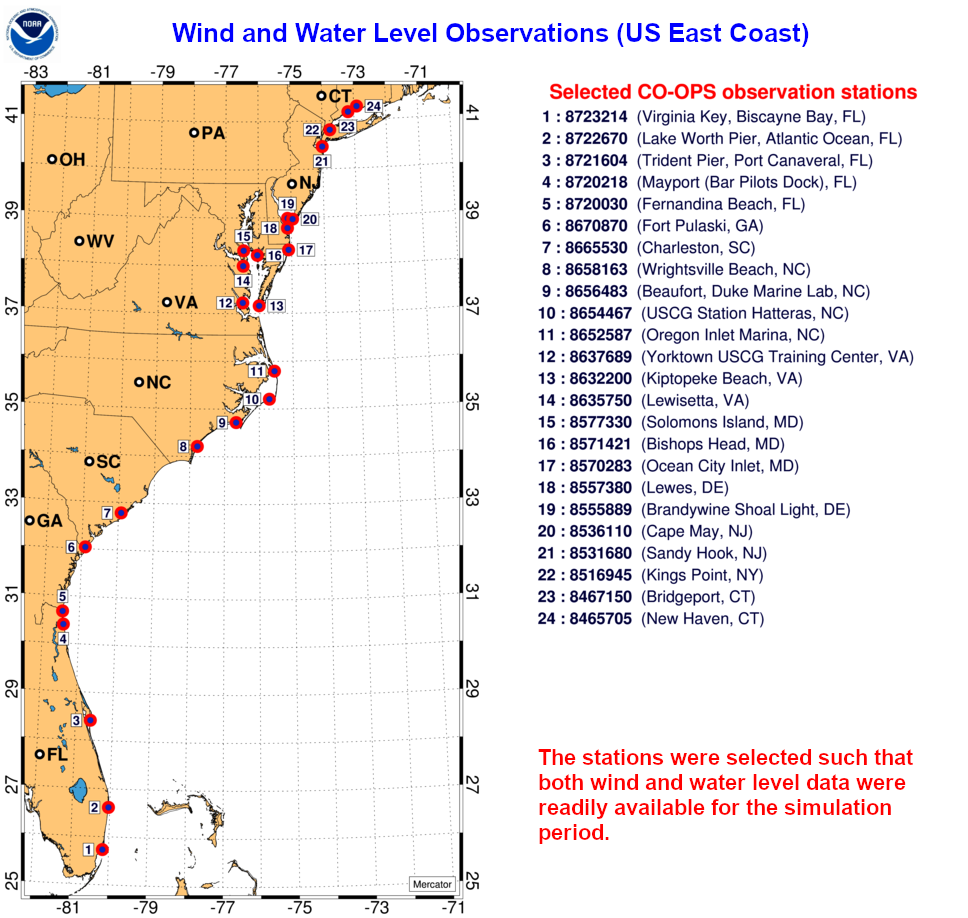 |
| Figure 15: CO-OPS wind and water level observation locations. |
All model results in both standalone and coupled configurations were compared against NOAA's CO-OPS wind and water level observations at selected locations as shown in Figure [15].
The analysis in the following sections focuses in two important aspects in parametric TC modeling: (a) the determination of a proper wind reduction factor \((w_{rf})\) and b) the choice of the choice of the parametric model to use for the particular simulation.
As outlined in section [Holland 1980], \(w_{rf}\) is an empirical gradient to 10-m surface boundary layer wind reduction factor used to convert the gradient winds to 10-m winds. The reported values for \(w_{rf}\) in the literature ([Vickery et al. 2007], [Powell et al. 2003], [Powell et al. 2005], [Batts et al. 1980], [Georgiou 1985] and many others), have a wide range based on the the spatial surface roughness geographic location, the time of the storm event and the characteristics of the TC. The wind reduction factors over the ocean used in the past (and in many occassions still used today) vary from as low as low of about 0.65 to as high as 0.95. Batts et al. 1980 used a value of 0.865, and Georgiou 1985, used a value of 0.825 near the eyewall, reducing to 0.75 away from the eyewall.
The developed PaHM system and its associated parametric modeling components need to be applied and tested to determine what parametric TC formulation is suitable for this evaluation study. As indicated in sections Holland 1980 and Generalized Asymmetric Vortex Holland, the TC models solve the same wind gradient equation \(\ref{eqn_holl80_grad_wind}\) using different assumptions and possibly slightly different parameterizations of the independent or random variables of the equation. Depending on the TC characteristics and the geographical location of the storm event, some TC models perform better than others. Vickery et al. 2007, presents an excellent review of the TC models pointing out the limitations and advantages of each TC modeling approach. The argument that none of the TC models "fits" all the TC modeling senarios, requires an analysis for the determination of the "optimal" TC model to be used in each case. Using data from past TC events (possibly grouped seasonally) for a specific region, the modeler and/or forecaster could obtain a very good guess of the "optimal" TC model for the region.
To determine the appropriate value for \(w_{rf}\) to be used for the PaHM generated wind fields for Hurricane Florence (2018) a series of simulations were performed using different values for \(w_{rf}\). The values of wind reduction factor used were: 0.65, 0.70, 0.75, 0.80, 0.85, 0.90 and 0.95. The PaHM generated 10-m wind speeds were compared against wind observations at all the selected CO-OPS locations (Figure [15]). Figure [16] shows the comparison at three radomnly selected locations for \(w_{rf}\) values of 0.65 (left panel) and 0.9 (right panel) clearly indicating that the value of 0.9 for \(w_{rf}\) improves all the statistical measures significantly.
| GAHM Wind Reduction Factor: 0.65 | GAHM Wind Reduction Factor: 0.90 | |
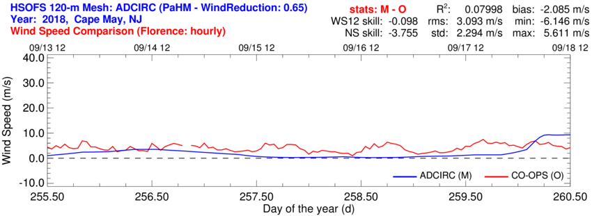 | 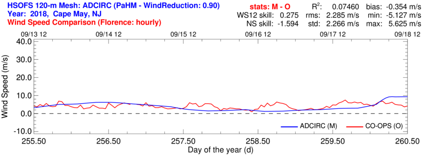 | |
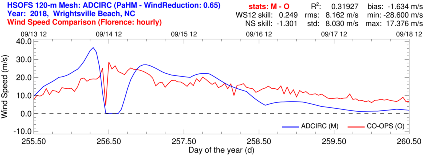 | 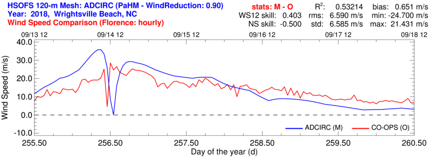 | |
| 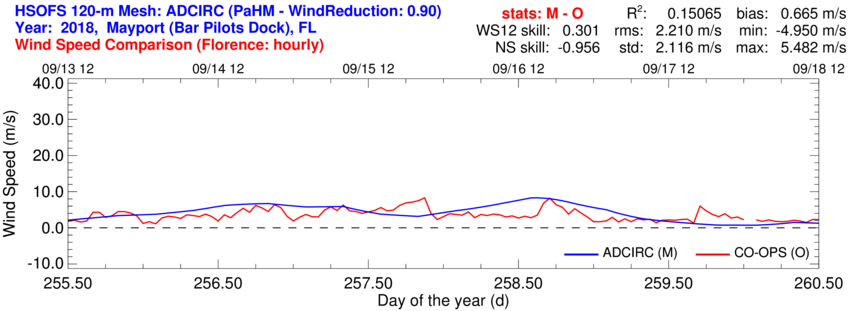 |
Figure 16: Effect of the wind reduction factor \(w_{rf}\) on PaHM predicted wind fields using the asymmetric vortex model GAHM.
The \(w_{rf} = 0.65\) case produces the worst statistics in all observation stations while, the case The \(w_{rf} = 0.90\) seems to produce the best results in all locations as shown in Figure [17], indicating that for Hurricane Florence, the optimal value of the wind reduction factor is 0.9. The googness of the results using the other values of \(w_{rf}\) (not presented here) falls between the ones for cases 0.65 and 0.90. Figure [17] shows the profile of the three statistical measures \((R^{2}, \, \text{RMSE and Willmott SKILL})\) for all sorted CO-OPS stations shown in Figure [15].
| GAHM Wind Reduction Factor: 0.65 | GAHM Wind Reduction Factor: 0.90 | |
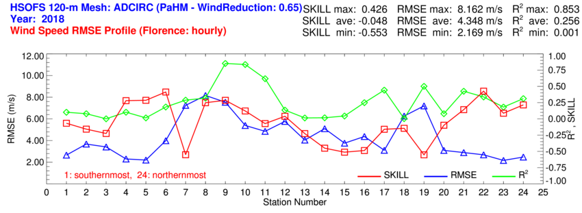 | 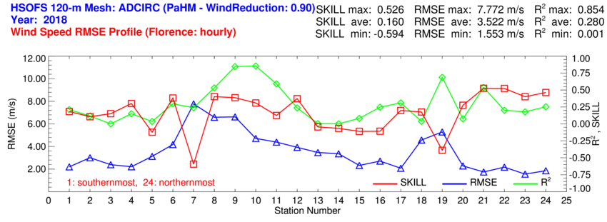 |
Figure 17: Spatial distribution of the wind reduction factor \(w_{rf}\) statistics along the Eastern U.S coastline. The PaHM wind fields were produced using the asymmetric vortex model GAHM.
Similar conclusions were obtained using the HM80 parametric TC model in PaHM, indicating that \(w_{rf} = 0.9\) is the optimal value for the wind reduction factor for the Hurricane Florence case, and this is the value used in all subsequent analyses.
This section is dedicated to the determination of the best TC model to be used for the current simulations. Figure [18] shows the results at selected CO-OPS locations using the Holland 1980 (left panel) and GAHM (right panel) TC parametric models. The three CO-OPS locations were chosen as the nearest ones to the path of Hurricane Florence. As mentioned in section [Parametric Models in PaHM], TC parametric models produce their best results in the region of the tropical storm's path. It is noted here that for most of the \(w_{rf}\) cases GAHM produces the best results. There are a few cases where Holland 1980 produced better results and others where the results were inconclusive.
| Symmetric Vortex Formulation (Holland 1980) | Asymmetric Vortex Formulation (GAHM) | |
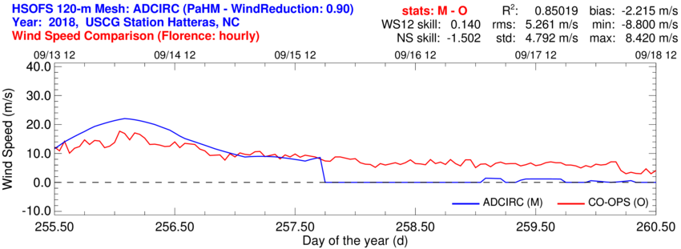 | 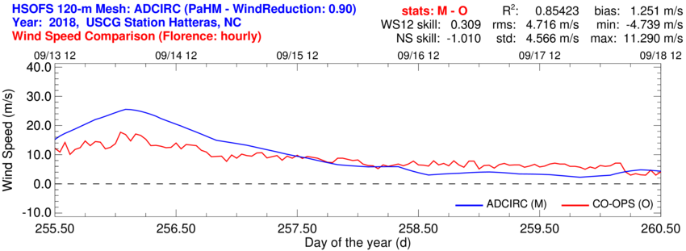 | |
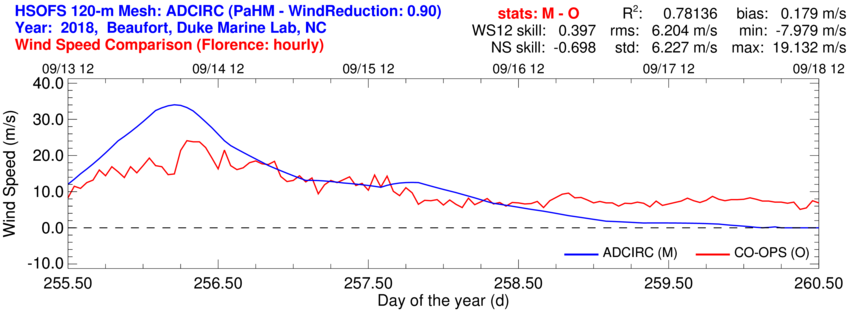 | 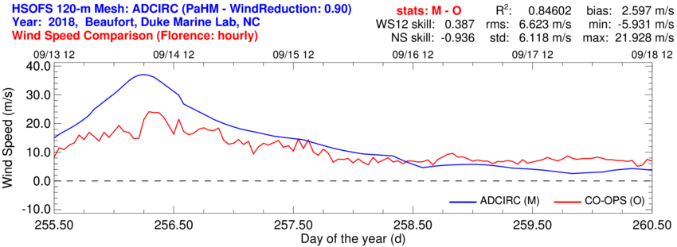 | |
|
|
Figure 18: Comparison between Symmetric and Asymmetric Vortex Formulations (Holland 1980 and GAHM respectively) of the PaHM predicted wind fields.
| Symmetric Vortex Formulation (Holland 1980) | Asymmetric Vortex Formulation (GAHM) | |
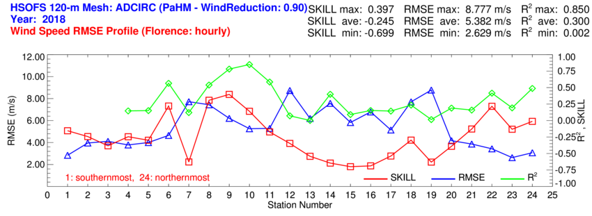 |
|
Figure 19: Spatial distribution of the model statistics along the Eastern U.S coast. The PaHM wind fields were produced using the traditional Holland 1980 model (left panel) and generalized asymmetric holland model GAHM (right panel).
As shown in Figure [19], GAHM produces results with much improved statistical measures (RMSE and Willmott SKILL) for all sorted CO-OPS stations indicating that GAHM is the best TC model to be used for the Hurricane Florence case study.
The coupled modeling approach to address the impacts of TC events such as hurricanes on coastal areas. PAHM is coupled (one way) with ADCIRC within CoastalApp using the NUOPC capability in both models. The NUOPC Caps share the PaHM data with ADCIRC on the common STOFS computational mesh shown in Figure [14]. PaHM is configured to use GAHM as its parametric model with \(w_{rf} = 0.9\). The ADCIRC produced water levels were compared with the CO-OPS observations as shown in Figure [20]. The landfall of Hurricane Florence occured Shouthern of Wrightsville Beach, NC (CO-OPS station 8) during the morning of September 14, 2018. It is clear from Figures [18] and [20] that the best results for both the wind speed and the water levels are obtained near the landfall region and around the landfall time.
| Away from Storm's Path | Region of Storm's Path | |
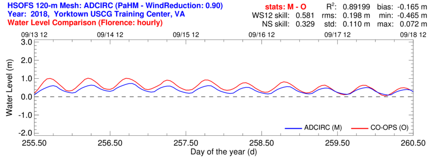 | 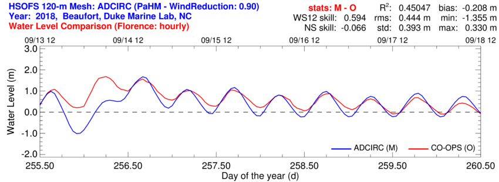 | |
| 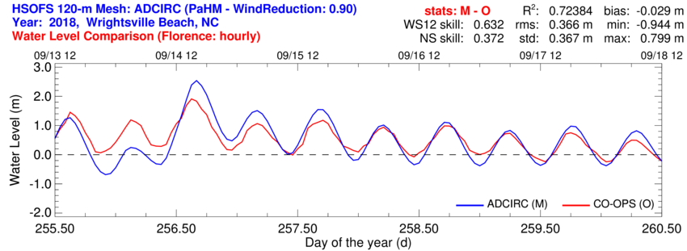 | |
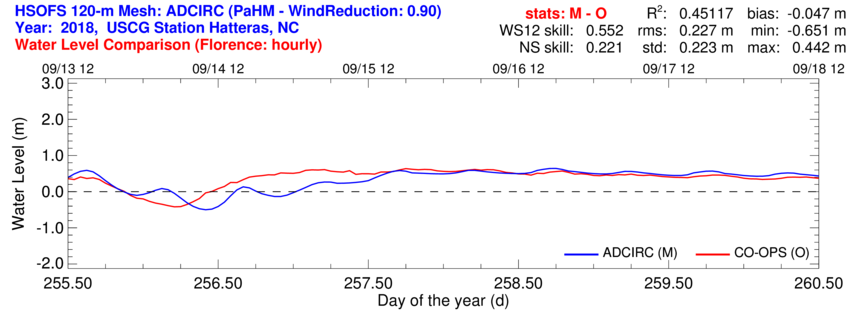 | 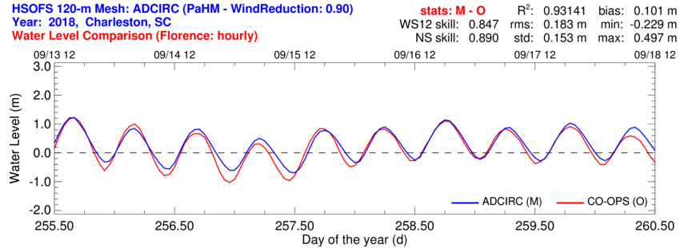 |
Figure 20: Comparison of ADCIRC generated water levels with CO-OPS observations.
| Statistics Profile for Wind Speed | Statistics Profile for Water Levels | |
| 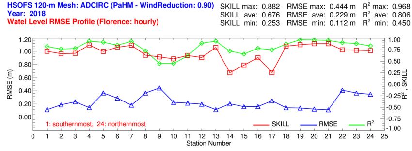 |
Figure 21: Spatial distribution of the statistics for the PaHM winds and the ADCIRC generated water levels along the Eastern U.S coast.
|
| Figure 22: Distribution of the coupled PaHM/ADCIRC produced maximum water levels at the landfall area of Hurricane Florence. |
Moving away from the landfall region, the PaHM winds are gradually reduced to zero thus, in those areas the ADCIRC generates tidal type water elevations (zero atmospheric forcing). Apparently the PaHM winds need to to be coupled with external wind products to produce proper atmospheric forcings across the whole computational domain. Figure [22] shows the storm surge innundation at the impacted areas by Hurricane Florence.